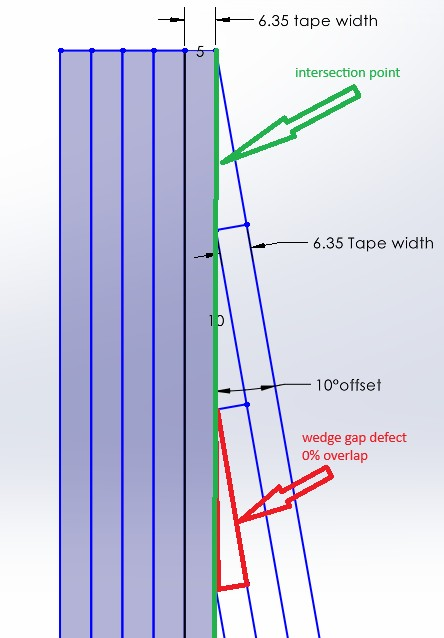
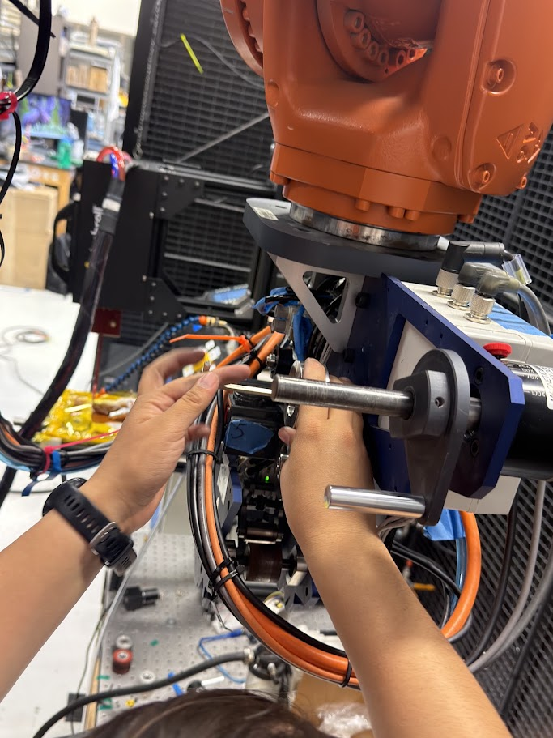
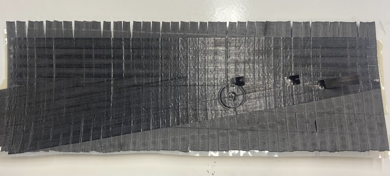
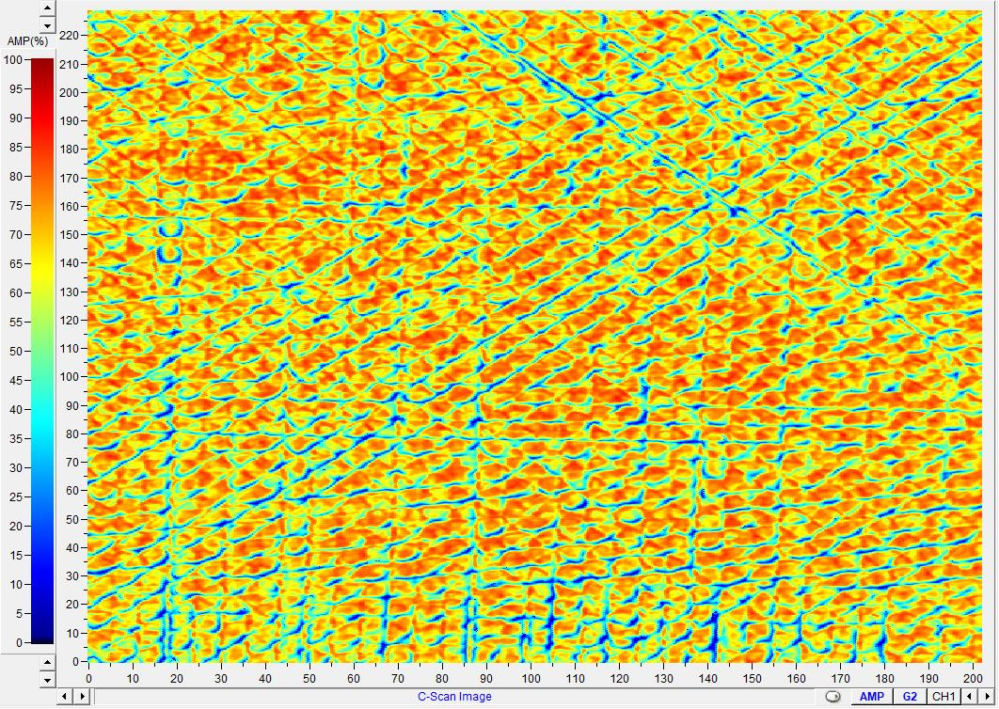
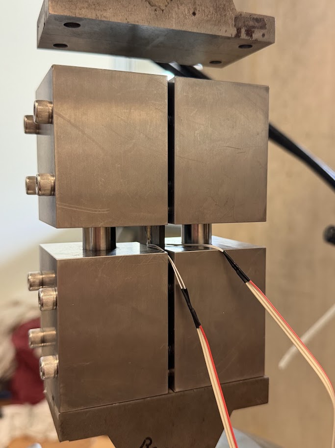
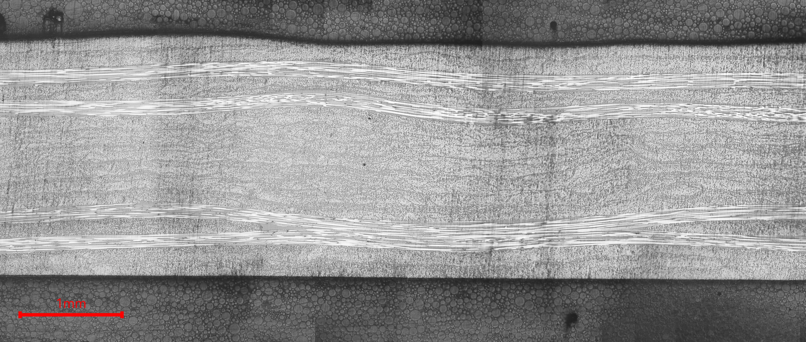
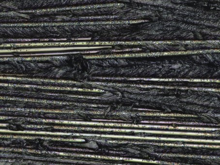
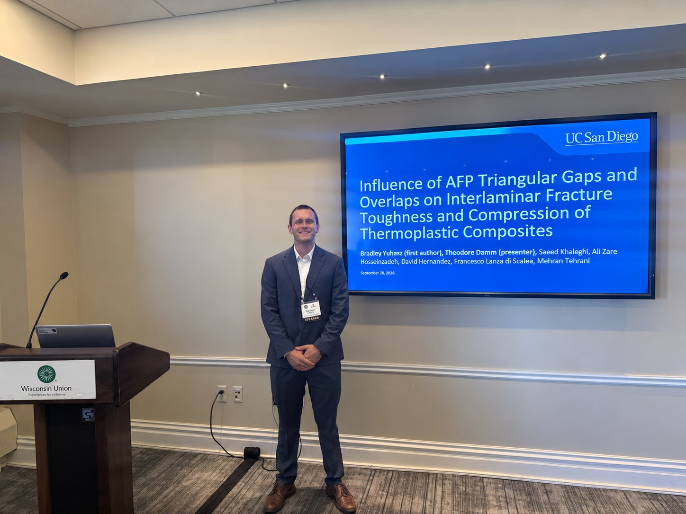

ROBOTIC MANUFACTURING • COMPOSITES • STRUCTURAL TESTING
AFP Wedge-Gap
Defect Research
Investigating how manufacturing-induced gaps, overlaps, and associated fiber distortion influence the structural behavior of automated-fiber-placement thermoplastic composites.
Manufacturing geometry becomes structural geometry.
Automated fiber placement enables rapid and repeatable manufacturing of large composite structures, but individual tows do not always meet perfectly. When neighboring courses intersect at an angle, small placement offsets can create triangular gaps or overlaps.
My research uses intentionally manufactured defects to isolate how those local geometric changes influence laminate architecture, fiber waviness, fracture behavior, and compressive performance.
The goal is not simply to identify whether a defect exists, but to connect the complete chain from manufacturing geometry to the resulting structural response.

Simplified geometry of an intentional wedge-gap defect generated where angled AFP courses intersect.
From programmed defect to failed specimen.
Experimental Design
Define laminate architecture, defect geometry, overlap condition, specimen configuration, and test strategy.
AFP Programming
Program and modify robotic toolpaths to manufacture controlled wedge-gap defects and baseline laminates.
Manufacturing
Operate, maintain, and troubleshoot the AFP system, manufacture panels, and complete high-temperature post-processing.
Inspection
Use ultrasonic C-scan inspection and optical characterization to evaluate manufactured laminate quality and defect geometry.
Mechanical Testing
Prepare and test specimens in compression and interlaminar fracture configurations.
Failure Analysis
Use microscopy, fractography, and mechanical test results to interpret failure mechanisms and guide the next specimen design.
Building controlled defects intentionally.
Creating a useful defect specimen requires the manufacturing geometry to be repeatable enough that differences in structural behavior can be connected back to the intended AFP condition.


Automated fiber placement during laminate fabrication.
Looking inside before breaking it.
After manufacturing and consolidation, selected panels are inspected using ultrasonic C-scan techniques.
The inspection helps identify internal features and manufacturing variation before specimens are cut and mechanically tested.
This creates an additional link between the intended AFP geometry, the manufactured laminate, and the mechanical response measured later.

Ultrasonic C-scan inspection of a manufactured laminate.

Compression testing used to evaluate the structural consequences of the manufactured defect architecture.
The defect only matters if it changes the structure.
Mechanical testing is used to determine whether the manufactured defect geometry produces a meaningful change in structural performance.
The broader research program includes compression and Mode I and Mode II interlaminar fracture testing.
Rather than treating strength or toughness values as the final answer, I use the mechanical results together with inspection and microscopy to understand why the specimens behave the way they do.
Connecting local geometry to failure.
Cross-sectional microscopy and fracture-surface analysis provide a closer look at how the AFP defect changes the local laminate architecture and how damage develops during structural testing.


What happens when the geometry looks worse than the mechanical result?
Microscopy has revealed visible fiber waviness associated with some defect configurations, but the corresponding reduction in compressive performance has not always been as large as initially expected.
Understanding that discrepancy is now driving additional specimen design, microscopy, fractography, and future three-dimensional characterization.
American Society for Composites
I presented this work at the American Society for Composites Annual Technical Conference in Madison, Wisconsin.
The project is part of an ongoing collaborative research effort within the UC San Diego Advanced Composites Laboratory.

Presenting AFP defect research at the American Society for Composites Annual Technical Conference.